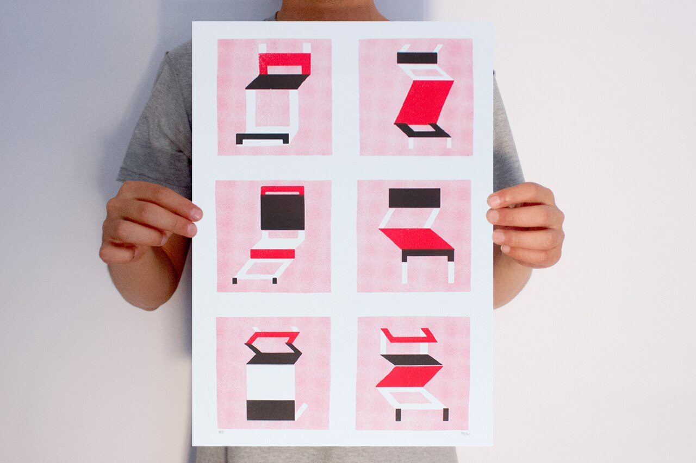

References / Illustration / 504
Mario Felipe, two-color riso print of chairs
An A3 riso art print in a numbered edition of 30: six stylized chairs in fluorescent red and black, each on a grainy pink screen.
- Source
- Flickr: Mario Felipe
- Creator
- Mario Felipe (iaoeu estudio)
- Made
- 2014
- Style
- Risograph (agent-proposed, not yet reviewed by a person)
- Moods
- Playful, graphic, handmade
- Evidence
- Viewed the 1280 × 853 px Commons thumbnail of the photograph (the full-size original returned HTTP 429). It shows one copy of the edition held by hand.
- Reviewed
- Rights
- Open license, stored. License: CC-BY-2.0. Rights policy
Context
The Flickr description says: “Print en risografia a dos colores en formato A3. Edición de 30 copias numeradas. Impresión: A3press.” (Flickr)
The photograph is on Commons as Impressão em risografia em dua cores, 2014, with a FlickreviewR license check passed on 2023-01-06.

Observed
- Two inks only: a fluorescent red-pink and black, on white paper.
- Each chair sits on a square of the pink ink printed as a screen, so the square reads as a light, mottled pink.
- The flat pink squares are grainy and uneven, with a faint grid texture.
- Chairs are drawn as flat, isometric planes with no outlines.
Why it belongs
The print makes a third tone from a screen of one ink, a typical way to widen a two-drum palette.
Borrow
Use a 30 to 40 % screen of the main ink as a panel ground, and full ink for the subject.
Measured
Machine-extracted by tools/image-traits.py on . Full measurement.
- Mean chroma
- 0.08
- Palette
- #ebe7e8 42%
- #e9c5d4 15%
- #a6a7b6 11%
- #d6cdce 10%
- #c0bac0 3%
- #efd6e1 3%
- #edf2f7 2%
- #908d99 2%

